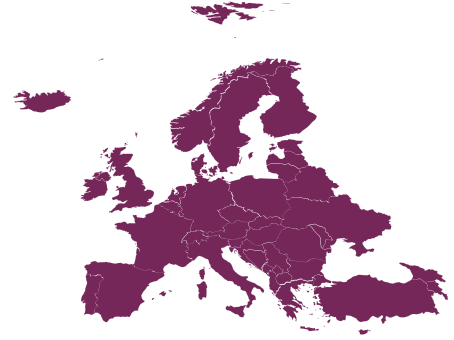
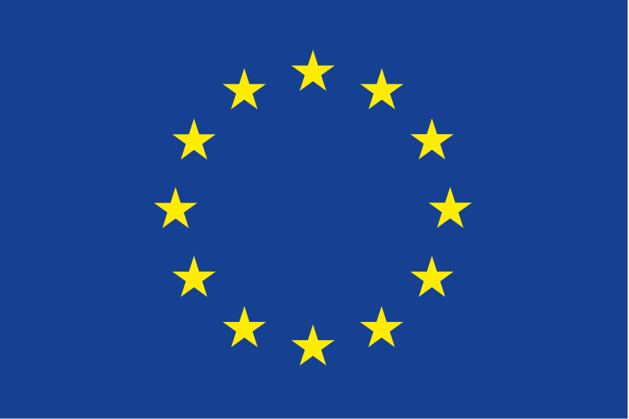

Políticas de Ciência Aberta no mundo:
União Europeia

Em 2014 foi lançado o Horizonte 2020, maior programa de pesquisa e inovação da União Europeia (UE), com orçamento de cerca de 80 mil milhões de euros para sete anos de investimento (2014 a 2020), visando facilitar descobertas e avanços científicos, transferindo ideias inovadoras dos laboratórios para o mercado.
Confira a política:
|  H2020 |